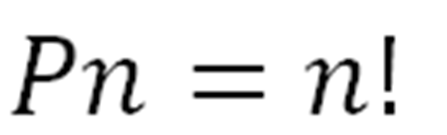

Las permutaciones se utilizan para calcular cuántas maneras diferentes se pueden organizar o ordenar un conjunto de elementos distintos. Se emplea cuando todos los elementos se usan y el orden es importante.

Variables:
n = número total de elementos
Fórmula: P(n) = n!